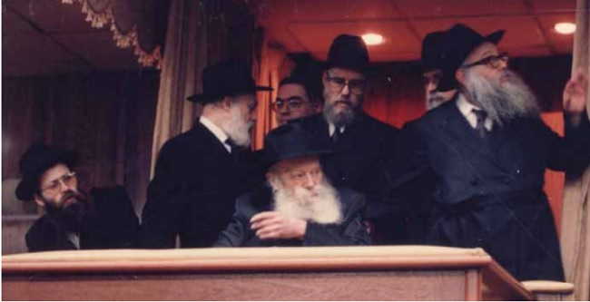

בכ”ז אדר א’ תשנ”ב, השתנו חייו של הרה”ח ר’ משה הלוי קליין. מסופר סת”ם ומוהל, ומתנ
בכ”ז אדר א’ תשנ”ב, השתנו חייו של הרה”ח ר’ משה הלוי קליין. מסופר סת”ם ומוהל, ומתנדב ב’הצלה’ - הפך להיות משמש-בקודש בחדרו הקדוש של הרבי, ובמשך כשלושים חודשים שהה יום-יום בחדר הרבי • לקראת מלאת חצי יובל לכ”ז אד”ר תשנ”ב, ניאות לשתף אותנו בזכרונותיו על ששה רגעים נדירים ומיוחדים בחדר הרבי - על מנת לעורר ב
בכ”ז אדר א’ תשנ”ב, השתנו חייו של הרה”ח ר’ משה הלוי קליין. מסופר סת”ם ומוהל, ומתנדב ב’הצלה’ - הפך להיות משמש-בקודש בחדרו הקדוש של הרבי, ובמשך כשלושים חודשים שהה יום-יום בחדר הרבי • לקראת מלאת חצי יובל לכ”ז אד”ר תשנ”ב, ניאות לשתף אותנו בזכרונותיו על ששה רגעים נדירים ומיוחדים בחדר הרבי - על מנת לעורר ביום סגולה זה את ציבור הקוראים ברגש התקשרות לרבי

“אותו יום שני, כ”ז אד”ר תשנ”ב, חרות בנפשי ובנשמתי לכל חיי. באותו יום יצאתי לתפילת מנחה בבית הכנסת הסמוך לביתי, ושלא כדרכי - השארתי את מכשיר הקשר של ‘הצלה’ בבית. כשחזרתי מהתפילה, שמעתי את הטלפון בבית מצלצל ללא הפסקה. על הקו היה ידידי ר’ אברהם (אינגי) ביסטריצקי, שעדכן אותי על הודעה שנשמעה קודם בקשר של ‘הצלה’ על קריאה דחופה שהתקבלה מהציון הקדוש, וביקש שאברר במה מדובר.
“בתור ‘שדרן’ של ‘הצלה קראון הייטס’ היה לי קו ישיר למוקד הכללי של ‘הצלה’. בתוך שניות בודדות קיבלתי עדכון על מה שאירע לרבי באוהל הק’. במהירות הבזק הגעתי לאמבולנס החונה ליד 770, ושעטתי בדרכי לאוהל.
מה קרה אז?
“בשנים ההן עוד לא הכרנו את הכניסה הראשית של ‘בית החיים’, רק את הכניסה הצדדית דרכה היו נכנסים ביו”ד שבט. הגענו לשם עם האמבולנס, אבל השער הזה היה סגור… לא חשבנו פעמיים ופשוט טיפסנו על הגדר. המכנסיים נקרעו מחוטי התיל שעל הגדר, אבל מי בכלל חשב על כך?! רצנו במהירות לעבר האוהל.
“עוד קודם לכן הגיע למקום אמבולנס של ‘הצלה קווינס’, אבל בהשגחה פרטית המנוע שלו הפסיק לעבוד, והיו מוכרחים להביא אמבולנס חלופי. בדיוק בפסק הזמן הזה אנחנו הספקנו להגיע, וכך הצטרפנו לצוות שהתלווה אל הרבי ל–770. למעשה מנקודה זו ואילך - כל חיי השתנו”.
•
כ”ז אד”ר תשנ”ב, זהו תאריך שחרות בלבו ובנפשו של כל חסיד חב”ד. יש את העולם ש”לפני כ”ז אדר”, ויש את “אחרי כ”ז אדר” - על שלל המשמעויות המתחברות לביטוי זה. אם כך אצל כל חסיד, הרי כאשר שוחחנו השבוע עם הרב משה הלוי קליין מקראון הייטס - הבנו כי אצלו, “אחרי כ”ז אדר”, זו התקופה המיוחדת ביותר בחייו, השזורה מחד בכאב עצום על המצב הבריאותי של הרבי ש”את חוליינו הוא נשא”, ומאידך - מהולה ברגש רוממות בזכות העובדה שזכה לשמש בקודש, ב’גן עדן העליון’.
רבים מחסידי חב”ד מכירים את הרב קליין כמוהל וסופר סת”ם מומחה, ומנהל אימפריית סת”ם מצליחה, אבל לדידו - פסגת חייו נמצאת בשנים שהקדיש כדי לשמש את הרבי בקודש פנימה. למעלה משנתיים זכה לשמש את הרבי מה”מ באופן יום–יומי.
הרב קליין נולד בירושלים, לאביו הרב אברהם אליעזר קליין ולאמו מרת לאה. לאחר חתונתו עם רעייתו מרת קריינדי, בתו של הרה”ח ר’ שמעון גולדמן, התיישב בקראון הייטס, והחל לעסוק בכתיבת ספרי תורה ובהגהתם. מלבד זאת, משמש הרב קליין כמוהל מומחה, ובשעות חירום התנדב בארגון ‘הצלה’.
כבן דודו של המזכיר הרב בנימין הלוי קליין, שמע פה ושם סיפורים מהקודש פנימה, אך מעולם לא חלם שיבוא יום והוא עצמו יזכה לכך; בוודאי לא פילל שאלו יהיו הנסיבות, אבל לבורא העולם תכניות משלו.
כמו שאר החסידים שזכו לשמש בקודש פנימה, הרב קליין סוכר פיו ואינו מספר מהנעשה בקודש פנימה. לקראת מלאת חצי יובל לכ”ז אד”ר תשנ”ב, ניאות בכל זאת לשתף אותנו בזכרונותיו החושפים טפח ומסתירים טפחים הרבה.
הסיבה להסכמתו נעוצה ברצון לעורר ביום סגולה זה את ציבור הקוראים ברגש התקשרות לרבי.
רגעי קדושה: ערב שבת אצל הרבי
מה הרגעים הכי זכורים לך מהתקופה בה זכית לשמש כמשב”ק בקודש פנימה?
היו רגעים רבים כאלה, אבל אספר דווקא על רגעים מסוימים בצהרי ימי שישי, אז הייתי מבקש מהרבי רשות לנקות את החדר ולהכינו לכבוד השבת. לאחר שקיבלתי את הסכמת הרבי, הייתי מטאטא את החדר הק’, ומנגב עם סמרטוט וקצת מים את מדפי הארונות והחלונות וכו’.
לאחר שהחדר היה נקי, הצבנו סמוך לרבי שולחן קטן, כאלה שמשתמשים בהם בבית רפואה, שנשאר משנת תשל”ח. פרסנו מפה לבנה על השלחן, עליה הנחנו חלות מכוסות במפה שרקום עליה 770, והפמוטים של הרבנית חיה מושקא, עם הנרות מוכנים להדלקה. בכל שבוע מחדש, היו אלה רגעים מרגשים ביותר. הרבי עם סרטוק משי שבתי, מראהו כמלאך ד’ צבאות והכל אפוף קדושה.
פעם שאלתי את הרבי האם אפשר להביא טייפ עם ניגוני ניח”ח, ולאחר שקיבלתי הסכמתו, הבאתי את המכשיר והשמעתי את ניגוני ניח”ח. היה נראה כי הדבר גורם נחת לרבי, שדפק עם ידו השמאלית לפי קצב הניגון.
רגע מרגש: ריקוד בחדר הרבי
רגע מרגש במיוחד, אירע באחד מימי ששי, בעומדי ליד שולחן היחידות, מוכן ומזומן למלא כל בקשת הרבי. פתאום נכנס המשב”ק ר’ שלום דובער גאנזבורג לחדר, והרבי החווה בידו השמאלית תנועה כמו שהיה עושה ביציאתו מתפילה בבית הכנסת לעודד את שירת ה’יחי’, ואמר: “נו”…
ר’ שלום בער שאל: “האם הרבי רוצה משהו?” והרבי שוב החווה בידו הק’ תנועה ואמר: “נו”…
כנראה שבגלל האווירה המיוחדת ששררה בחדר, העז ר’ שלום בער ושאל: “דער רבי וויל אז איך זאל טאנצן?” [= האם הרבי רוצה שאני ארקוד]? והרבי נענע בראשו הקדוש לחיוב.
ר’ שלום בער התחיל לרקוד בחדר לפי קצב הניגון שהתנגן ברקע. פתאום סובב הרבי את ראשו לצד מערב, הביט בי, והחווה בידו הקדושה תנועה ממערב למזרח, ואמר: “נו”… שאלתי האם לרקוד אתו? ונענע בראשו לחיוב.
כך רקדנו ביחד באמצע החדר, כאשר הרבי מעודד בידו הקדושה, עד שהניגון הסתיים. באותן דקות ספורות, שנדמו בעיני כנצח, חיוך גדול היה נסוך על פניו הקדושות.
מאז, נחרת הניגון בלבי ומזמזם במוחי מפעם לפעם. כאשר אני נזכר בניגון זה, מתמלא לבי ערגה וגעגועים לאותם רגעים קדושים ונדירים, ותחושה ברורה בלבי, שרגעים מיוחדים אלו בלבד, כבר מהווים תשלום הגון על עבודת הקודש אצל הרבי במשך כשנתיים וחצי.
רגע מרטיט: הבכי של הרבי במאמר ‘באתי לגני’
מחודש אלול תשנ”ג, לקראת כל יומא דפגרא היה הרב לייבל אלטיין מביא למשב”קים וידאו או קלטת מההתוועדות של הרבי ביום זה, והרבי האזין להתוועדות. זכורני שבליל יו”ד שבט תשנ”ד, הביא הרב אלטיין קלטת של התוועדות יו”ד שבט תשי”א בעת קבלת הנשיאות.
מספר הרב קליין: לאחר ששאלתי את הרבי, אם ברצונו לשמוע את התוועדות יו”ד שבט תשי”א, שם נמצא גם המאמר הראשון שאמר, “באתי לגני”, מעמד קבלת הנשיאות של הרבי. הרבי נענע בראשו לחיוב והקשיב בתשומת לב לשיחות הראשונות. כאשר שמעו בקלטת שהרבי מתחיל לומר את המאמר, במילים “אין דעם מאמר . . הויבט אָן דער רבי באתי לגני”, הרבי נטל חתיכת בד וסבב אותה סביב אצבעותיו בדיוק כפי שעשה בהתוועדויות עם המטפחת לפני אמירת המאמר. פניו נעשו רציניות מאד, וכך הקשיב כל המאמר.
באותו מאמר שנאמר בתשי”א, כאשר סיפר במאמר על מסירות נפשם של רבותינו נשיאינו למען הזולת, סיפר הרבי על אדמו”ר האמצעי שהפשיל את שרוולו והראה לאברך שעורו צפד מעליו - וכשהרבי אמר זאת, בכה מאד. כאשר שמע הרבי קטעים אלו, שוב החל לבכות! המחזה המרטיט חזר על עצמו גם בעת ששמע את הסיפור על הרבי מהר”ש, ואחר כך במילים “ידע אינש בנפשיה שיש לו שטות למטה מזה וכו’”. כשהרבי אמר בתשי”א שהיו צריכים שיהיה צדיקא דאתפטר, בכדי שיהיה אסתלק דקוב”ה - בכה הרבי מאד, ובהמשך, במילים “והוא מחולל וכו’”. כשהרבי הקשיב לקלטת, שוב ראיתי כי הוא בוכה ממש כפי שאמר זאת ארבעים ושתים שנה קודם לכן! דמעותיו זלגו על לחייו הקדושות. זה היה מחזה מבהיל לראות את פני קדשו בזמן ההוא.
בכל פעם שהרבי בכה, חששתי שמא ההתרגשות של הרבי עלולה להזיק לבריאותו, ושאלתי האם להפסיק? אך הרבי נענע בראשו הק’ לשלילה…
רגע גורלי: הרבי חורץ גורלות ומרגיע מהפיכות
בימים ההם, שאלות הרות גורל נחרצו לפי ניע ראשו של הרבי - לחיוב או לשלילה. כאחד שזכה מן הסתם לראות מאות ואלפי פעמים בהם השיב הרבי בניע ראש, מה הסיפור שנחרת אצלך יותר מכל?
יש רבים–רבים כאלה, אבל אני רוצה לספר עניין ששייך לכלל עם ישראל. היה זה באחד מימי חול המועד תשנ”ג, כאשר מזכירו של הרבי, הרב יהודה לייב גרונר, נכנס פנימה בקודש ושאל את הרבי האם הוא יכול לשאול משהו. לאחר שהרבי נענע בראשו לחיוב, אמר הרב גרונר:
עס איז דא א קוּ אין רוסלאנד, די צבא האט איבערגענומען, און מוסקבה איז פול מיט טאנקים, אמריקה האט אוועקגעשטעלט פליינס אין מוסקבה’ און ווער עס איז נישט קיין רוסישער בירגער קען ארויספארן, און עס איז געבליבן כמעט צוויי שעה ביז דער לעצטער פליין וועט ארויספארן.
עס איז געקומען א בקשה פון כפר חב”ד אזוי ווי עס זענען דארטן דא א צאל מיידלאך וואס העלפן ארויס די שלוחים פראווען דעם יום טוב סוכות, און די עלטערן זענען זייער באזארגט, פרעגן זיי צו מען זאל גלייך פארן צום איירפארט און ארויספארן כל זמן מען קען?
[= מתחוללת כעת הפיכה ברוסיה. הצבא השתלט, ומוסקבה מלאה בטנקים. אמריקה הציבה מטוסים במוסקבה, ומי שאינו אזרח רוסי יכול לברוח. נותרו עוד שעתיים עד שהמטוס האחרון ייצא. הגיעה בקשה מכפר חב”ד: מכיוון שיש שם כמה בנות שעוזרות לשלוחים בפעילות של יום טוב סוכות, והוריהן מאוד מודאגים, הם שואלים האם לנסוע מיידית לשדה התעופה ולצאת כל זמן שאפשרי?]
הרבי התחיל לנענע בראשו הק’ מצד לצד לאות “לא”, לפחות עשר פעמים, ובמשך זמן זה אמר “נייייין” [= לא] ארוך מאד.
הרב גרונר (שרצה לוודא שהבין נכון) המשיך ושאל: “אלע זאלן בלייבן?” [= שכולם יישארו?] והרבי ענה “יע” [=כן]!
הרב גרונר המשיך לשאול: “עס וועט קיינעם גארנישט שאטן?” [= זה לא יזיק לאף אחד?]
והרבי השיב: “ניין”!
בכל פעם ששאלו את הרבי שאלות, נהגנו לצאת מהחדר או לגשת לפינת החדר ולהמתין ליד הכיסא של היחידות. כאשר הרב גרונר סיים לשאול ויצא מהחדר, נותרתי מסומר למקומי למראה הבלתי–יאומן שראיתי במו–עיניי: הרבי יושב בחדרו הקדוש בברוקלין, ורואה באופן ברור ביותר מה שקורה במוסקבה. הרבי מגלה זאת לעינינו, ופוסק חד–משמעית, שאין סיבה לעזוב, והכל יהיה בסדר!
לאחר שהרב גרונר יצא, חזרתי לשרת את הרבי, בעודי רועד כעלה נידף, מעוצמת הגילוי האלוקי שזכיתי לראות מול עיניי.
כעבור דקות אחדות חזר הרב גרונר ושאל את הרבי: “מען קען עפעס פרעגן?” [= האם אפשר לשאול משהו]? והרבי נענע בראשו “כן”.
הרב גרונר אמר, שבהמשך לשאלה הקודמת - יש במוסקבה גם בנות מקראון הייטס, והוריהן המודאגים ביקשו לשאול אם תשובת הרבי לבנות מארץ ישראל תקפה גם בנוגע לבנות מקראון הייטס, או שיורו לבנותיהן למהר לשדה התעופה במוסקבה ולנסות לחזור לניו יורק?
שוב חזר על עצמו המחזה המדהים: הרבי עונה בנחרצות לשלילה, כשהוא מנענע בראשו הק’ כמה פעמים לשלילה, ואמר בקול גדול כנ”ל “נייייין”!
הרב גרונר שאל שוב: “אלע זאלן בלייבן?” [= שכולם יישארו]? והרבי ענה “יע”. ושוב שאל: “עס וועט קיינעם נישט שאטן?” [= זה לא יזיק לאף אחת?] והרבי ענה “ניין”.
שעות בודדות לאחר מכן, השתלטו הרוסים על המצב וההפיכה הסתיימה. הכל על מקומו בא בשלום כאילו לא היה דבר.
שוב היה ממש מדהים לראות איש אלוקים, מלובש בגוף גשמי שרואה מסוף העולם ועד סופו. כשראיתי זאת, נפל עליי פחד איום ונורא ממש.
רגע ניסי: הברכה של הרבי - מניו יורק לדרום אפריקה
תקופה זו, שלאחר כ”ז אדר, זכורה לרבים כתקופה בה חולל הרבי ניסים ונפלאות בניע ראש בלבד. האם תוכל לשתף אותנו באחד המופתים שהיית עד להם?
‘אדם קרוב אצל עצמו’, והנס הגדול ביותר הזכור לי מתקופה זו, הוא נס שאירע עם אחי, לאחר שאני אישית ביקשתי עבורו ברכה מהרבי. זה היה נס גלוי מול כל תחזיות הרופאים, ועד היום הזה זכור לי כל פרט מאותו לילה מיוחד:
באותה תקופה שהיתי בחדרו של הרבי בכל לילה, וכמובן שהייתי צריך להיות ערני כל הלילה כדי להיות מוכן ומזומן לשמש את הרבי בכל רגע. מכיוון שכך, בכל יום הייתי הולך לביתי בסביבות השעה 4 אחר הצהריים, לנוח כמה שעות, ובשעה 9 בערב הייתי חוזר לחדר הרבי.
בכ”ד במנחם אב תשנ”ג, בערך בשעה שבע בערב, העירה אותי אשתי בבהלה, ואמרה שגיסתי עטי צלצלה כעת, ובבכי היסטרי ביקשה להעיר אותי ולדבר אתי, כי משהו קרה…
כאשר הרמתי את שפופרת הטלפון, שמעתי את גיסתי בוכה בהיסטריה, בלי יכולת לדבר. פחד גדול נפל עלי, ולא ידעתי מה לחשוב. מה קרה??. ביקשתי ממנה להירגע מעט ולספר לי מה אירע. במאמץ ניכר הצליחה לפצות את פיה, ולספר שאחי היקר חיים שי’ שהה בשחיטה במרחק של 120 קילומטר מיוהנסבורג, ושם כנראה עוד לא שמעו על הפטנט להכניס את השור לפני השחיטה למקום שלא יוכל לזוז, אלא ארבעה שחומי עור גדולים מחזיקים בשור. כאשר אחי ניגש לשחוט שור גדול, הצליח השור לחלץ את רגליו הקדמיות, ובעט בחיים מכה הגונה. מעוצמת המכה, סכין השחיטה החדה חדרה לתוך כף ידו השמאלית וחתכה את כף היד לשניים. החתך היה עמוק כל כך, עד שהסכין היה מוסתר בתוך כף היד מהבוהן ועד האצבע הקטנה.
אחי איבד כמויות גדולות של דם. הוא הובהל לבית רפואה מקומי, שם קבעו הרופאים שעליו לעבור ניתוח מיידי כדי לעצור את הדם ולתפור את החתך העמוק הזה. אולם לדאבון לב, באותה שעה היה המנתח המומחה עסוק בניתוח אחר שאמור היה להסתיים רק כעבור שעתיים. בתחילה חשבו להמתין לו , אולם לאחר חצי שעה, כשהרופאים ראו שאינם מצליחים לעצור את הדם, ואחי איבד כבר יותר משליש מדמו - החליטו לבצע את הניתוח מיידית על ידי רופא כללי, שאינו מנתח מומחה. במשך שעתיים לקח לרופא לבצע את הניתוח, ובמהלך נזקקו להחדיר לאחי כמה מנות דם. בסופו של תהליך, לאחר שתפר את היד בשבעים (!) תפרים - הצליח הרופא לעצור את הדם.
הרופא עדכן את אחי, שכפי הנראה נחתך העצב של האגודל השמאלי, ויהיה עליו לעבור ניתוח נוסף. מכיוון שמדובר בניתוח עדין ומורכב במיוחד, החליטו להעבירו ליוהנסבורג, שם ינסו הרופאים המומחים להציל את המצב.
כאשר אחי הגיע לבית הרפואה ביוהנסבורג, אמר הרופא המומחה שהסיכויים לתקן את העצב הפגוע קטנים מאוד, וכפי הנראה אחי לא יוכל יותר להזיז את האגודל.
אם לכל אדם זו בשורה קשה, לאחי זו הייתה בשורה טראגית במיוחד, מכיוון שללא אגודל פעיל הוא לא יוכל יותר לשחוט פרות, ואפילו לא עופות.
את כל זה סיפרה לי גיסתי, כשהיא ממררת בבכי.
לאחר שהתאושש מניתוח החירום, אמר אחי לרעייתו: “הרי ‘אח לנו בבית המלך’. תתקשרי למשה, ותבקשי שייכנס לרבי ויבקש את ברכתו הקדושה”.
כמובן שאחרי טלפון כזה לא יכולתי להמשיך לישון. הלכתי מיד למקווה, ומשם פניתי לחדר הרבי. לבי התפוצץ מדאגה לאחי, וחיכיתי להזדמנות שאוכל להזכירו לברכה לפני הרבי.
לאחר חצות הלילה, נוצרה הזדמנות מתאימה, אזרתי אומץ וניגשתי לרבי, ושאלתי האם אפשר להזכיר מישהו.
לאחר שהרבי הנהן בראשו הק’ לחיוב, אמרתי לרבי:
‘אחי היקר, חיים יהודה ליב בן פעשא לאה, שליח בדרום אפריקה ושוחט עבור קהילת ליובאוויטש שם, הייתה לו תאונת עבודה כאשר אחד הפרים יצא מידם של המחזיקים אותו מוכן לשחיטה, ונתן לו בעיטה והסכין החד נכנס לו לתוך היד, והוא איבד יותר משליש מדמו. גם תפרו לו יותר משבעים תפירות, והרופאים אומרים שנראה להם שלא יוכל להזיז עוד את האגודל, וממילא לא יוכל להיות יותר שוחט, ויש לו בלע”ה משפחה גדולה, ומה יהיה עם פרנסתו?’
תוך כדי סיפור הפרטים, ראיתי שהרבי מחייך חיוך רחב מאד. איבדתי את עשתונותיי והתחלתי לבכות באומרי: “רבי איך בעט א ברכה אויף א רפואה שלימה, ער קען נישט רוקן דעם פינגער” [= רבי, אני מבקש ברכה לרפואה שלימה, הוא לא יכול להזיז את האצבע]!
ואז הרבי חייך עוד ועוד, והרים ידו השמאלית בתנועה של ביטול, ואמר: “הַא!” (כאומר: זה לא נכון!)
לא ידעתי את נפשי מהתשובה הברורה של הרבי. ומכיוון שהייתי נרגש מאוד, שאלתי את הרבי בבכי של התרגשות: “ער וועט קענען רוקן דעם פינגער? ער וועט האבן א רפואה שלימה?” [= האם הוא יוכל להניע את האצבע? האם תהיה לו רפואה שלימה?]
והרבי ענה בפיו הקדוש: “יע” [כן]!
העזתי ואמרתי עוד פעם: “זאל ער האבן א [= תהיה לו] רפואה שלימה”, והרבי ענה “אמן”. בהתרגשות עזה אמרתי לרבי: “א דאנק [= תודה] רבי”! והרבי חייך אלי חיוך נפלא.
זה היה בדיוק בשעה 12:20 בלילה, שעה 6:20 בבוקר לפי שעון יוהנסבורג!
בבוקר, לאחר שסיימתי את משמרתי בחדר הרבי, שלחתי לחיים פקס עם כל הפרטים האמורים. אחר–כך סיפר לי חיים, שבדיוק בשעה בה הרבי העניק את ברכתו, בשעה 6:20 בבוקר, שעון יוהנסבורג, הוא התעורר עם כאבים איומים בידו. הוא צעק בקולי קולות עד שאשתו התעוררה מצעקותיו. כחצי דקה או דקה היו לו כאבים עצומים, ומיד אחר כך נרגעו הכאבים. באותו רגע ניסה להזיז את האגודל, וב”ה היא זזה לכל הצדדים.
“ראיתי במו עיני נס גלוי ממש, כיצד הרבי ריפא את ידו של אחי ממרחק של אלפי קילומטרים…”, מסיים הרב קליין את סיפורו המדהים, כשהוא עדיין רועד מהתרגשות.
רגעים נמשכים: המבט של הרבי, שעורר לתשובה
במהלך התקופה בה זכית לשמש כמשמש בקודש, שהו לצד הרבי עוד אנשים שהיו חברים בצוות הרפואי. כיצד השפיעה עליהם השהות במחיצת הרבי?
אותם הרופאים וה’אחים’ שזכו לשהות במחיצת הרבי, כולם בלי יוצא מן הכלל, הושפעו עמוקות מהרבי. אספר לך דווקא על פקידה אחת בבית הרפואה ‘הר סיני’, שזכתה לראות את הרבי פעמים בודדות, אך מבטו של הרבי השפיע עליה עוד שנים רבות אחר–כך, עד שהתעוררה לתשובה שלימה:
כאשר הרבי הגיע לבית הרפואה ‘הר סיני’ במנהטן לצורך ניתוח, ביקש ממני הרב גרונר ללכת למשרד הקבלה ולבצע את רישום הקבלה. את פני קיבלה פקידה בכירה בשם גב’ שוורץ, שמיד כאשר ראתה אותי אמרה: ‘קיבלתי כבר עדכון שמגיע לכאן הרבי הגדול ביותר בעולם, ואני אזרז את התהליך ככל יכולתי’.
לאחר הזנת הנתונים לטפסים הרלוונטיים, היא הייתה צריכה לשאול את הרבי כמה שאלות. משום מה הרבי לא השיב לשאלותיה, ורק כאשר תרגמתי את השאלות לאידיש, השיב הרבי על כל השאלות. לסיום ביקשה שהרבי יחתום על הטופס, ולאחר שהרבי חתם, חזרה למשרדה כדי לסיים את הליך ההרשמה.
כפי שהתחייבה, השתדלה לזרז את כל ההליכים. גם לאחר שערכו את הניתוח והרבי עבר לחדר התאוששות, הגיעה גב’ שוורץ כמה פעמים לוודא שהרבי מקבל את הטיפול הרפואי הטוב והמהיר ביותר.
כעבור כמה שעות הגיעה לחדרו של הרבי עם פנים של תשעה באב. היא סיפרה כי קיבלה טלפון מאחיה, שבנו בן העשר נדבק בחיידק טורף, ובניסיון אחרון להצילו החליטו הרופאים להטיס אותו ממנהטן לבית רפואה מיוחד בפילדלפיה, המתמחה בטיפול בחיידק הטורף, אולם גם גדולי הרופאים שם מעריכים שהוא לא יצליח לחיות יותר מכמה שעות נוספות…
הרב גרונר ניגש אל הרבי, ואמר שנמצאת כאן גב’ שוורץ, שעזרה ככל יכולתה על מנת לזרז את כל התהליכים בבית הרפואה, וכעת יש בעיה רפואית קשה עם האחיין שלה, והמצב מאוד מסוכן. הרב גרונר הזכיר את שם האחיין, ושם אמו, וביקש שתהיה לו רפואה שלימה ומיידית. הרבי נענע בראשו לאות ברכה, ואחר–כך הביט בגב’ שוורץ וחייך.
לא חלפו שלוש שעות, והיא חזרה שוב לחדר הרבי, הפעם בפנים שמחות ומאירות, ממש כמו בפורים. היא ביקשה לבשר לרבי כי חל שינוי פתאומי במצבו של הילד, והוא הצליח לעבור בשלום את התקפת החיידק. לאור השינוי הבלתי–צפוי עדכנו הרופאים את התחזית שלהם, ואמרו כי תוך זמן קצר יוכל להשתחרר מבית הרפואה! ברוך ה’, האחיין הבריא לחלוטין, וכיום הוא אב מאושר לכמה ילדים.
אבל הסיפור לא הסתיים: בקיץ האחרון ישבתי במשרדי, כאשר הטלפון צלצל ועל הקו היה המוקדן של אתר חב”ד.אורג.
אני רגיל לקבל מהם מידי פעם טלפון, כאשר אנשים שואלים בקשר לברית מילה, או ספרי תורה וכדומה. אבל הפעם הסיפור היה שונה… המוקדן מספר שהתקשרה אליו אשה שהציגה את עצמה כפקידה שביצעה את הרישום של הרבי בבית הרפואה ‘הר סיני’, והיא זוכרת את הרב יהודה לייב גרונר והרב משה קליין, ומבקשת לדבר איתי. אמרתי לו שהוא יכול לתת לה את מספר הטלפון שלי.
כעבור זמן קצר היא התקשרה, ומיד כששמעתי את קולה, נזכרתי בה ובכל מה שעשתה למען הרבי. שאלתי אותה: גב’ שוורץ, מה שלומך?
היא התפלאה שזכרתי את שמה, למרות שחלפו כל כך הרבה שנים. אבל בגלל הסיוע המיוחד שהעניקה לרבי, היא הייתה חקוקה בזכרוני. לאחר כמה מילות נימוס, שמעתי ממנה את הסיפור המדהים הבא:
כמעט 17 שנה חלפו מאז ראתה את הרבי בבית הרפואה, והיא יצאה כבר לפנסיה. אלא ששבועיים לאחר שיצאה לפנסיה, החלה לשמוע מעין קול פנימי שאומר לה: הייתה לך הזכות לסייע ברישום של הרבי הכי גדול בעולם, והייתה לך הזכות לראותו אותו באותה תקופה כמעט מדי יום - כיצד ייתכן שלא מעניין אותך לדעת מהי היהדות?!
בעקבות ההתעוררות המיוחדת, היא הגיעה למסקנה שהגיע הזמן להתעניין בתורה ובמצוות. היא התחילה ללכת לתפילות ולשיעורים בבית חב״ד, ובהמשך אף הכשירה את המטבח וכיום חיה חיים יהודיים כשרים!
בכינוס השלוחות האחרון, ביקשו ממני לספר לשלוחות על מופתים שראיתי אצל הרבי, ובין השאר סיפרתי את הסיפור המדהים של גב’ שוורץ, כיצד המבט של הרבי עורר אותה אחרי 17 שנה, והחזיר אותה בתשובה שלימה! בסיום הסיפור, עשיתי לשלוחות הפתעה נעימה, כאשר אמרתי: ‘גברת שוורץ, השלוחות תשמחנה מאוד לראות אותך!’… להפתעת כולן הגב’ שוורץ שהייתה נוכחת באולם קמה ממקומה ואישרה את הסיפור המפעים שזה עתה שמעו…
אחר–כך ביקשתי מהשלוחות שכל אחת תציג את עצמה, והיכן מקום שליחותה. הפעם היה תורה של גב’ שוורץ להתפעל מאוד כאשר ראתה במו עיניה את השפעתו של הרבי בכל פינה בעולם!
•
אני רוצה לסיים בנימה אישית:
באחד הימים ששהיתי בחדר הקדוש של הרבי, הגיע הזמן של המשמרת שלי. בדיוק ברגע שהגעתי, ביקש הרבי משהו, והאח הגוי לחץ על הביפר כדי לקרוא לי. כך היה הנוהל, שאם שהיתי בחוץ לכמה דקות לסדר כמה דברים, וקיבלתי צפצוף בביפר, ידעתי שאני צריך להיכנס מיד.
כאשר פתחתי את הדלת, ראיתי את המחזה הבא: הרבי רצה שהמשב”ק יעשה משהו עבורו, והגוי שחשב שהמשב”ק הקודם עדיין על משמרתו, ולכן הוא אמר לרבי שהוא כבר מגיע. אבל הרבי נענע בראשו לשלילה. באותו רגע נכנסתי, והגוי התנצל לפני הרבי ואמר כי לא ידע שהחליפו משמרות, וכעת משה קליין יבצע את הבקשה.
שמעתי אותו אומר לרבי את הדברים, ואז ראיתי את הרבי מנענע בראשו לחיוב, כשעל פניו חיוך נפלא.
ההכרה הזאת, שהרבי רוצה שאשמש אותו, והחיוך הזה - היה עבורי תשלום מלא עבור כל שלושים החודשים ששהיתי בגן עדן העליון, במחיצתו של הרבי!
מי יתן ונזכה לכתוב מיד ממש על התגלותו של מלכנו משיחנו לעיני בשר, ויגאלנו ויוליכנו קוממיות לארצנו ויבנה את בית המקדש השלישי והנצחי מיד ממש!
חשיפה מיוחדת: המסר של הרבי
במהלך הראיון חושף בפנינו הרב קליין פתק קטן השמור אצלו, ובו מסר מיוחד שהרבי אמר ימים ספורים לאחר האירוע הבריאותי בכ”ז אדר א’.
על השתלשלות האירועים שאיפשרה את העברת המסר, מספר הרב קליין:
כידוע, לאחר האירוע הבריאותי היה קושי להבין את דיבורו של הרבי. ביום שישי ר”ח אדר ב’, בין תפילת שחרית למוסף, החל הרבי לומר משפט מסויים, אך אנחנו לא הצלחנו לקלוט את הדברים.
בראותי כמה חשוב לרבי לומר את הדברים, עמדתי לפני הרבי ורשמתי מילה אחרי מילה. אחר–כך רשמתי את המשפט השלם, ושאלתי את הרבי האם הבנתי מדוייק. ברשותי נשמרה אחת הטיוטות האחרונות, לא זו הסופית, אבל בהחלט כמעט מדוייקת של המסר אותו ביקש הרבי להעביר:
“א רב זאל פסק’ענען, אז דער אויבערשטער זאל מיר געבן א רפואה קרובה, און אריכות ימים ושנים טובות, אזוי ווי ער האט מיר געגעבן ביז ערשט, בשיבה טובה ורחבה, בכלי טובה ורחבה, שלום ועושר טובה והרחבה. און אזוי ווי דאס איז בהרחבה, זאל זיין אויך פאר כלל ישראל. אזוי ווי עס (איז) געווען שיבה טובה ורחבה ביז ערשט, אזוי זאל זיין ווייטער און האבן נחת פון אלע חסידים”.
[שרב יפסוק שהקב”ה יתן לי רפואה קרובה ואריכות ימים ושנים טובות, כפי שנתן לי עד עכשיו, בשיבה טובה ורחבה בכלי טובה ורחבה, שלום ועושר טובה והרחבה. וכפי שזה בהרחבה - שיהיה גם עבור כלל ישראל. כפי שהיה שיבה טובה ורחבה עד עתה, כך יהיה הלאה, ושיהיה נחת מכל החסידים]
לאחר שסיימתי לכתוב, אמר הרבי: נו… שאלתי אם לקרוא את הנוסח הסופי, והרבי נענע בראשו לחיוב. קראתי לפני הרבי את כל המסר, והרבי נענע בראשו להסכמה, ואמר ‘אמן!’. היה נראה שיש לרבי נחת רוח גדול.
לאחרונה סיפרתי על כך לאחד מרבני חב”ד הקרובים אליי, ושאלתי אם מותר לי לפרסם את הדברים. לאחר שראה את המסר, אמר שאינו מבין כיצד מנעתי בר מהחסידים כל כך הרבה שנים. “זה מדהים ומרגש לדעת כיצד הרבי דואג לחסידים, וגם במצב כזה מבקש הרחבה עבור כלל ישראל, והעיקר - נחת מהחסידים”.